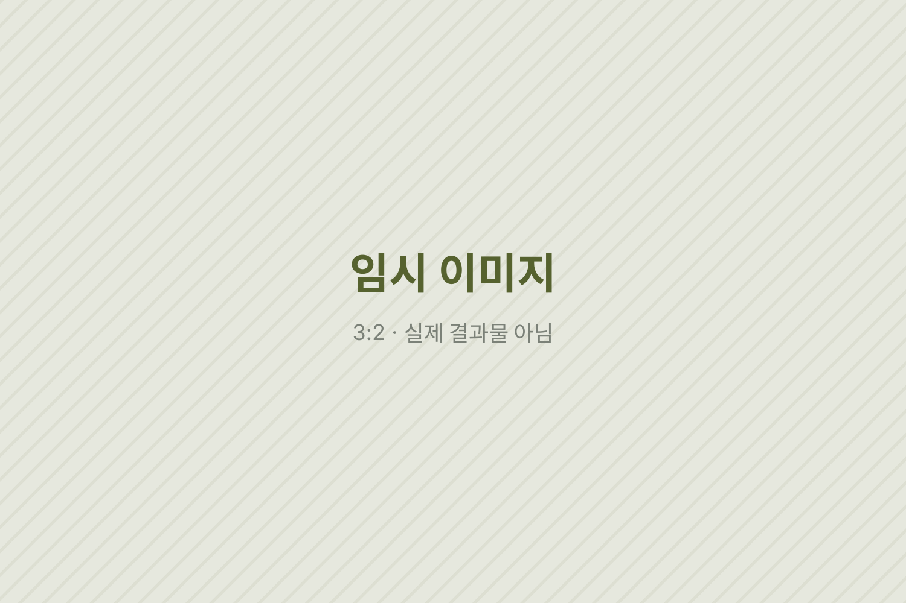
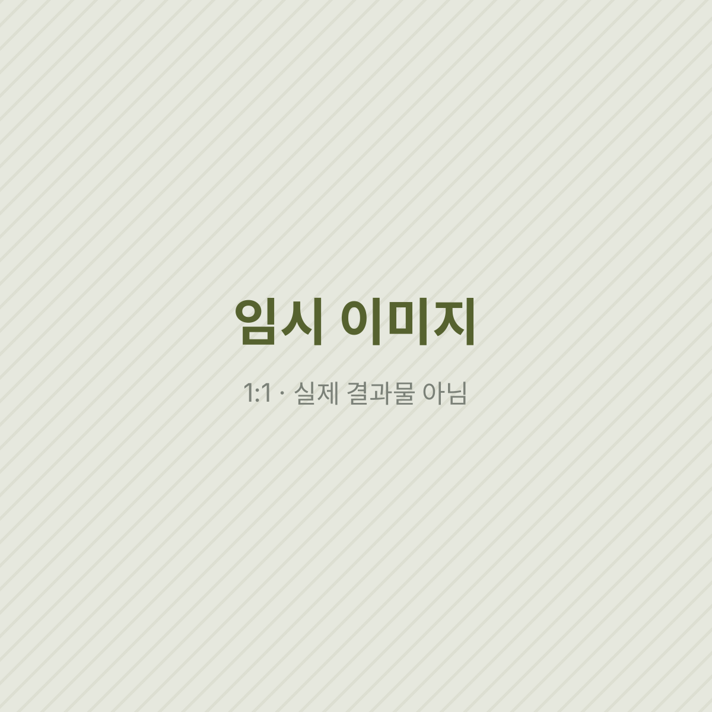

임시 시안 · 이 페이지의 글·이미지·영상은 레이아웃 확인용 더미입니다. 실제 원고와 결과물로 바뀔 예정입니다.
(1) · Saengmag · Editorial / Carousel
생맥 오리지널 에디토리얼
왜 1080×1350에는 진정성을 담을 수 없다고 생각할까?
인스타그램의 세로 한 장은 흔히 정보를 빠르게 넘기기 위한 틀로 여겨진다. 이 섹션은 그 틀 안에 오래 머무는 글을 놓아 보려 한 오리지널 에디토리얼을 한데 묶는다. (임시 도입문)
Situation작은 화면은 짧은 글만 견딘다는 믿음
피드 위의 콘텐츠는 대개 3초 안에 판단된다고들 말한다. 그래서 1080×1350의 화면은 큰 글씨와 요약된 문장, 한눈에 들어오는 정보로 채워지기 쉽다. 그 문법은 효율적이지만, 오래 곱씹어야 하는 마음을 담기에는 늘 조금 비좁아 보였다.
이 문단에는 생맥이라는 매체가 어떤 독자를 만나고 있었는지, 그리고 그 독자들이 어떤 콘텐츠 앞에서 손을 멈추었는지가 들어갈 자리다. 매체의 상황과 문제의식을 두세 문장으로 적는다.

질문은 결국 이것이었다. 정해진 틀이 문제인가, 아니면 그 틀을 대하는 방식이 문제인가. 틀을 바꿀 수 없다면 틀 안의 속도를 바꿀 수는 있지 않을까.
Solution넘기는 손을 멈추게 하는 여백
긴 고백보다 짧은 문장, 빽빽한 정보보다 넉넉한 여백이 오히려 독자를 오래 붙잡는다고 보았다. 장마다 하나의 문장만 남기고, 나머지는 독자가 채우도록 비워 두는 방식이다. (임시 원고)
이 문단에는 대표 사례의 구성 흐름이 들어간다. 첫 장에서 무엇을 약속하고, 가운데에서 어떻게 리듬을 바꾸며, 마지막 장에서 무엇을 남기는지를 순서대로 적는다.
피드를 넘기는 손을 멈추게 하는 건 긴 고백이 아니라 짧은 문장과 넉넉한 여백이다.
대표 사례 1의 관점에서
제목 후보와 최종 선택의 이유, 이미지와 글의 비율을 정한 기준처럼 제작 과정에서 내린 결정을 한두 개 골라 구체적으로 적는 문단이다. (임시 원고)
Result한 장에 오래 머문 흔적
결과 단락에는 섹션에 묶은 대표작 목록과 각 편의 숫자(좋아요, 저장, 공유, 도달), 그리고 그 숫자를 어떻게 읽었는지가 들어간다. 숫자는 캡처로 확인한 값만 적는다.

마지막 문단에는 다음 에디토리얼에서 바꿀 것 한 가지를 적는다. 잘 된 이유와 아쉬운 지점을 모두 숫자와 독자 반응에 기대어 정리한다. (임시 원고)